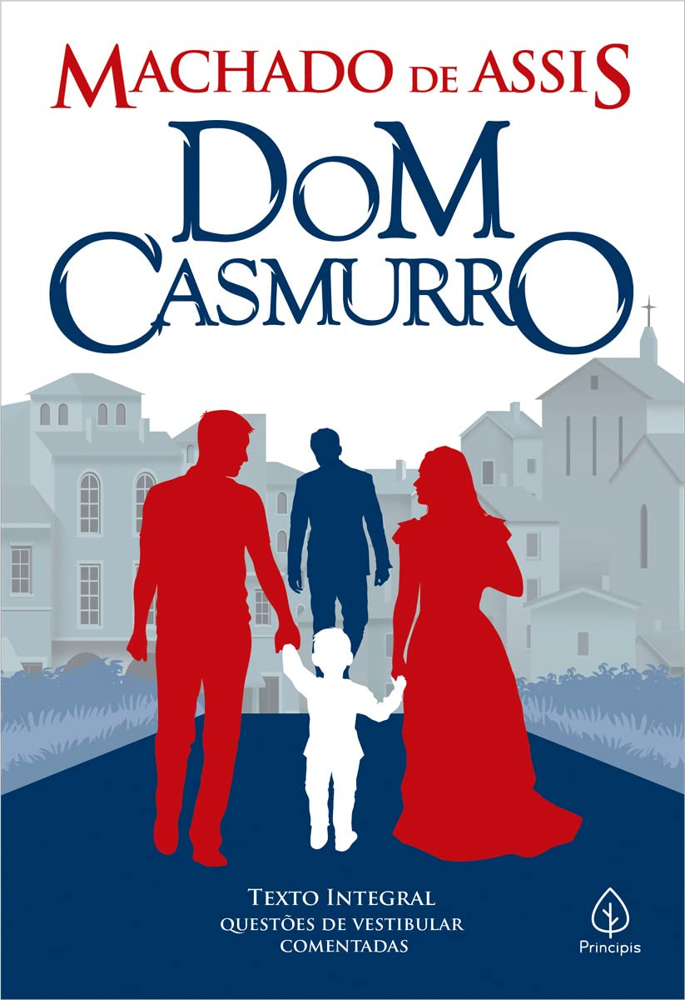

Dom Casmurro
Machado de Assis
Resumo
Bentinho relembra acontecimentos de sua juventude e de sua relação com Capitu. A narrativa é marcada por memórias, ciúmes e dúvidas sobre os acontecimentos apresentados pelo narrador.
Temas
Memória, ciúme, relações humanas e subjetividade.
Avaliação
4,7/5
Informações
- Autora: Machado de Assis
- Gênero: Romance
- Literatura Realista
Do livro para o cinema
Dom casmurro recebeu uma adaptação cinematográfica dirigida por Moacyr Góes, lançada em 2003.
A adaptação cinematográfica
O filme adapta a obra literária Dom Casmurro para um contexto contemporâneo, apresentando a história de Bento e Ana por meio do cinema e explorando temas como o amor, o ciúme, a desconfiança e as incertezas nos relacionamentos.
Nesta área você também poderá adicionar futuramente informações sobre diferenças entre o livro e o filme.